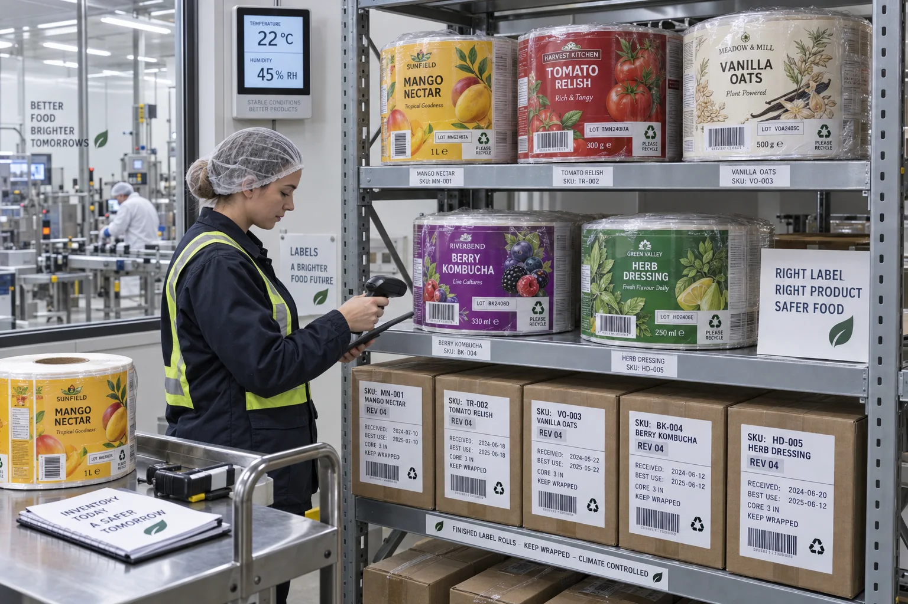

Short answer
Store printed label rolls upright or in their intended supported orientation, inside original wrapping and cartons, away from sunlight and heat, under the material supplier's specified temperature and humidity. Rotate inventory by artwork revision and best-use date, not only by arrival date.
Most label storage problems look like printing problems when they reach the line. The liner curls, rolls block, adhesive edges ooze or labels dispense inconsistently. By then the carton that sat beside a sunny warehouse door for three months is no longer part of the conversation.
What storage can change
| Condition | Possible effect | Line symptom |
|---|---|---|
| High heat | Adhesive flow, blocking or reduced stability | Sticky edges and difficult unwinding |
| High humidity | Paper and liner absorb moisture | Curl, registration or dispensing variation |
| Very dry air | Moisture loss and static | Feeding, dust attraction or brittle paper |
| Sunlight/UV | Color and material aging | Fading or changed adhesive response |
| Crushing | Roll edges and cores deform | Web tracking and tension problems |
A composite co-packer problem
This is a composite planning example. A beverage co-packer reports that the first half of a label order runs perfectly while older reserve rolls break at the die-cut edge and feed unevenly. Both rolls carry the same SKU and printer reference.
We initially look at die depth because that is a believable production cause. The reserve cartons, however, were opened the previous season and stored above a warm filling room. The newer rolls stayed wrapped in a controlled cage. The label specification did not change; its history did.
Keep rolls wrapped until they are needed
UPM Raflatac's finishing guidance says pressure-sensitive materials should be stored away from direct sunlight and heat in a dark, dry place. It bases shelf-life conditions on 20–25°C and 40–50% relative humidity and advises keeping coil wrapping in place to reduce ambient moisture effects.
Those numbers are a useful industry reference, not permission to ignore the product data sheet. Specialty adhesives, films, thermal materials and finished printed rolls may have different windows. The converter's finished-label guidance should travel with the shipment.
Inventory control needs artwork control
Adhesive age is only one reason to rotate stock. Labels also expire commercially when an ingredient line, barcode, distributor address or claim changes. A warehouse can keep rolls in perfect physical condition and still ship obsolete copy.
- Print SKU and artwork revision on the carton label.
- Record received date and supplier best-use date.
- Separate approved stock from quarantine and obsolete versions.
- Use first-expire-first-out when the material date is the limiting factor.
- Destroy or clearly block withdrawn revisions before a rushed production run.
Acclimate before opening
Moving a cold roll into a warm humid room can create condensation. Moving a damp paper roll into a dry production room can change curl as it equilibrates. Bring sealed cartons into the production environment with enough time to acclimate, then open only what the line needs.
| Before production | Check |
|---|---|
| Carton | SKU, revision, damage and storage status |
| Roll | Core roundness, edge damage, telescoping and blocking |
| Labels | Color, curl, liner cuts, adhesive ooze and splice marks |
| Applicator | Core, unwind direction, roll diameter and sensor setup |
| Trial | Dispensing, placement and adhesion after 24 hours |
Factory-side view
A large reorder discount can become expensive warehouse decoration
We benefit when a customer buys more labels. That does not mean more is always the right quantity.
If the artwork changes twice a year and twelve months of rolls are ordered at once, storage is only preserving the next write-off.
When smaller orders win
High-volume label pricing rewards longer runs, but fast-changing SKUs may justify smaller releases. Compare setup savings with storage space, material shelf life, forecast uncertainty and artwork obsolescence. A blanket order with scheduled releases can sometimes preserve purchasing leverage while reducing physical inventory risk.
Warehouse checklist
- Record temperature and humidity in the label storage zone.
- Keep cartons away from exterior walls, heaters and sunlight.
- Leave rolls wrapped and supported to prevent edge damage.
- Scan SKU, revision, received date and best-use date.
- Quarantine damaged, wet or obsolete rolls immediately.
- Acclimate sealed cartons before production.
- Retest adhesion and dispensing when storage history is uncertain.
Review UPM Raflatac's official roll storage and finishing specifications for its stated conditions. For reducing obsolete versions, continue with Multi-SKU Short-Run Label Printing and the Label Roll Direction Guide.
Frequently asked questions
How should label rolls be stored?
Keep rolls in a dark, dry, temperature-controlled area, protected in their original wrapping and cartons until use. Follow the material supplier’s specific storage window and handling guidance.
What temperature and humidity are typical for label storage?
Many supplier data sheets reference approximately 20–25°C and 40–50% relative humidity, but the exact product data sheet controls. Prolonged heat or high humidity can shorten shelf life.
Can old label rolls still be used?
Possibly, but age, storage history, adhesive behavior, liner condition, print durability and dispensing should be tested. A date alone cannot confirm performance after poor storage.
Should rolls be removed from plastic wrapping before production?
Keep them wrapped during storage to limit moisture exposure. Acclimate them under controlled conditions according to supplier guidance, then open only the quantity needed for production.
Related label guides
- Food-Contact Printing Inks for Labels: Buyer Guide
- Labels for Compostable Packaging: Material Guide
- Peel-and-Reveal Labels: Extended Content Guide
Review the complete label construction
Send package photos, material details, finished label size, quantity by artwork, storage conditions and application method. We can review fit, material and production details before preparing a quote and digital proof.